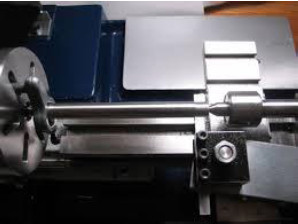
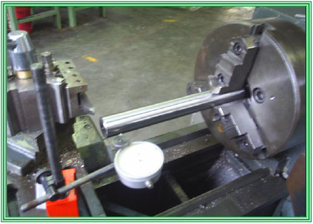

UJI PARALELITAS MESIN BUBUT
Activity
Untuk praktek dari mesin bubut ini sebaiknya diuji kepresisian dari mesin yang akan di gunakan. Pengujian yang sederhana adalah dengan melihat kelurusan antara chuck dan sente penahan. Hal ini sangat penting karena akan berpengaruh terhadap kesilindrisan benda hasil bubutan.
- Uji Paralelitas
Caranya :
a. Memasang senter penahan ( kepala lepas).
b. Memasang senter kepala mati(sebelumnya melepas chuck).
c. Memasang benda uji yang telah di gerinda (test bar) di antara dua senter.
d. Memasang dial indicator dan mengepaskan ujung penanya pada benda uji.
e. Menggerakkan dari tepi ke tepi lainnya, penyimpangan yang di perbolehkan max 0,02 per 100 mm panjang.

http://watchmaking.weebly.com/uploads/1/1/7/9/1179986/7066603_orig.jpg?398x297
Pembacaan indicator maksimum 0,01 per 10 mm panjang. - Uji Kelurusan Chuck
Caranya :
a. Memasang chuck rahang 3 atau rahang 4
b. Memasang test bar, penjepitan dengan panjang 1 x diameter benda uji. Pada saat penjepitan benda uji harus ditahan dengan senter, kalau sudah dijepit maka senter
dimundurkan.
c. Memasang dial indicator dan mengepaskan pena pada benda uji.
d. Menggeser dial indicator dari tepi chuck ke ujung benda kerja.
e. Penyimpangan maksimal 0.05 mm sepanjang 100 mm panjang.

- Uji Paralelitas